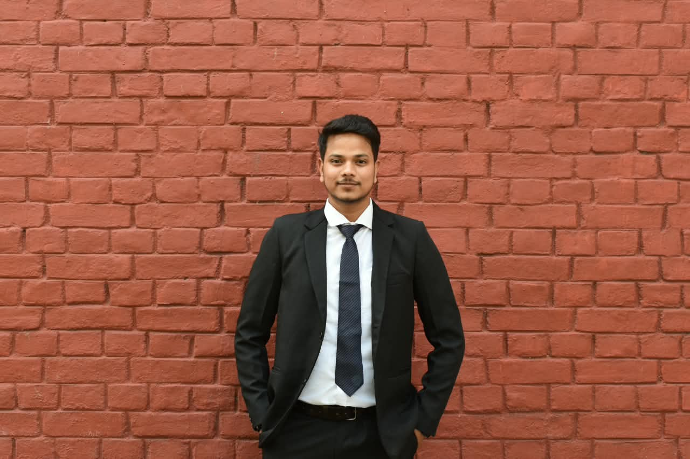

WELCOME TO MY PORTFOLIO
Data Science | Machine Learning | Computer Vision | IoT
M.Tech student at IIT Kharagpur with a background in Agricultural Engineering and a strong interest in Data Science, Artificial Intelligence, Computer Vision, and intelligent systems. I enjoy solving real-world problems using technology, programming, and data-driven approaches.

A little introduction
Hello! I'm Sandeep Upadhyay, currently pursuing M.Tech in Aquacultural Engineering at the Indian Institute of Technology Kharagpur, with a B.Tech background in Agricultural Engineering.
My interests lie in Data Science, Machine Learning, Artificial Intelligence, Computer Vision, Python Programming, and IoT-based intelligent systems.
My current academic research focuses on computer-vision-based analysis and mathematical modeling of fish swimming locomotion, combining experimental methods with computational techniques.
I enjoy exploring innovative technologies, developing intelligent solutions, and applying computational methods to real-world engineering and research challenges.
IIT Kharagpur
AI & Data Science
Python & Computer Vision
Fish Locomotion
Technologies and tools I work with
Engineering, AI and technology projects
Developing a computer-vision-based workflow to extract fish body midline and caudal-fin motion from swimming videos. The work focuses on analyzing swimming kinematics and mathematical modeling of Nile Tilapia locomotion.
View Research →An automated fish-feeding project using embedded hardware and control logic to support scheduled fish feeding.
Know More →Final-year B.Tech project focused on runoff estimation in the GKVK Dryland Micro Watershed using the NRCS Curve Number method.
Know More →Exploring an intelligent monitoring framework using water-quality parameters and data-driven techniques for aquaculture applications.
Know More →Current academic research
My research investigates fish swimming locomotion using experimental observations, video analysis, and mathematical modeling.
The project aims to develop a computer-vision-based workflow for reconstructing body midline and caudal-fin motion from swimming videos.
Research FocusAcademic background
M.Tech in Aquacultural Engineering
Current postgraduate studies and research in fish locomotion, computational analysis, and engineering.
Undergraduate background in agricultural engineering, water resources, soil and water conservation, irrigation, and engineering applications.
Explore my academic background, technical skills, research interests, projects, and experience.
I'm open to discussions about research, technology, Data Science, Machine Learning, and collaboration.